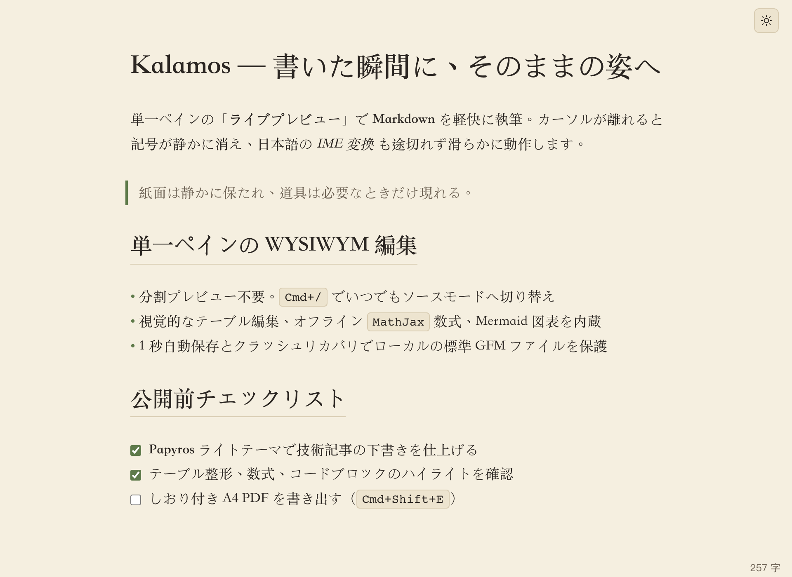

クイックオープンと最近使ったファイル
Cmd+P（Windows は Ctrl+P）で開いているフォルダ内の Markdown をあいまい検索し、一致文字をハイライト表示。未入力時はフォルダを問わず最近開いた最大 20 件を一覧でき、Cmd+Enter で新規タブ起動や「ファイル > 最近使った項目を開く」にも対応します。
書いた瞬間に、そのままの姿へ。
macOS・Windows 向けの静かな WYSIWYM ライブプレビュー Markdown エディタ。古代ギリシャ語の「葦ペン」に名を借り、標準的な GFM ファイルを打ったそばから紙面のように整えます。無料・オフライン・アカウント不要。
Windows 版は実験的・未署名です（SmartScreen 警告時は「詳細情報」→「実行」）。macOS 版は未公証です（初回起動時は右クリック →「開く」）。

左右分割プレビューは不要です。閉じ記号を打った瞬間に描画され、カーソルが離れると記号が静かに消えます。Cmd+/ でいつでもソースモードに切り替えられます。
開いているフォルダ内の Markdown ファイルをあいまい検索し、一致文字をハイライト表示。未入力時は最近開いたファイルを表示し、「ファイル > 最近使った項目を開く」にも対応します。
全角句読点に隣接する太字・斜体も正しく解釈。IME 変換中は装飾の更新を一時停止するため、日本語や中国語の入力中に画面が揺れません。
独自記法を一切含まない標準 GFM 形式で保存。原子的保存、1 秒自動保存、クラッシュリカバリで大切な下書きを守ります。
Cmd+Opt+T のグリッド選択ダイアログか、|a|b|＋Enter ですぐに表を作成。セル内での直接編集、列幅ドラッグ、本文を隠さないフローティングツールバーで快適に構造を調整できます。

内蔵の MathJax 3 でインライン $...$ とディスプレイ $$...$$ 数式（AMS・mhchem 化学式・bbox 対応）を描画。Mermaid、flowchart.js、シーケンス図もテーマ配色に馴染む SVG として表示します。
紙面のトーンに溶け込む低彩度シンタックスハイライトと、リガチャ対応の JetBrains Mono を同梱。Cmd+Opt+L で行番号の表示も自在に切り替えられます。

Cmd+P で記事やメモを瞬時に呼び出し、複数タブで下書きを並行執筆。外部ツールを行き来せずに公開・納品まで完結できます。

Cmd+P（Windows は Ctrl+P）で開いているフォルダ内の Markdown をあいまい検索し、一致文字をハイライト表示。未入力時はフォルダを問わず最近開いた最大 20 件を一覧でき、Cmd+Enter で新規タブ起動や「ファイル > 最近使った項目を開く」にも対応します。
1 つのウィンドウで複数文書を編集可能（Cmd+T / Cmd+W / Ctrl+Tab）。ドラッグ並び替えとタブごとの Undo 履歴に対応し、文書内の検索・置換（Cmd+F）、フォルダ横断検索（Cmd+Shift+F）、環境設定（Cmd+,）も備えています。
ドラッグ＆ドロップや貼り付けで画像を自動的に assets/ へ保存し相対リンクを挿入。<img> のサイズ／zoom 指定、静的サイト向けルートフォルダ（typora-root-url・Cmd+Opt+R）、settings.json による安全な CLI アップローダ連携を備えています。
Cmd+Shift+E で見出し階層に対応したしおり付き A4 PDF を出力（数式・図表も描画。macOS は PDFKit、Windows はヘッドレス Edge／Chrome を使用）。任意の Pandoc を導入すれば DOCX・ODT・LaTeX・MediaWiki・EPUB への書き出しや、既存文書の Markdown インポートも可能です。
Cmd+Shift+O でローカルフォルダを開き、ファイルツリー・ファイル一覧・アウトラインを切り替え。iCloud Drive や Dropbox 内の外部変更も自動反映し、ステータスバーに選択範囲対応の単語数・読了時間を表示します。
ホバー表示＆ジャンプ対応の脚注、YAML Front Matter、見出しブックマークコピー（Cmd+Shift+C）、オフライン GitHub 絵文字補完（:smile）、半角・全角括弧の自動ペア補完を標準搭載しています。
温かみのある Papyros、目に優しい Melan、システム連動を Cmd+Shift+T で瞬時に切り替え。themes/ フォルダに CSS を置けば配色や文字サイズ、両端揃え、見出し自動連番まで自在にカスタマイズできます。

Ataraxia フォーカスモード（F8）で現在の段落以外をやさしく淡くし、Stichos タイプライターモード（F9）で入力行を常に画面中央に保ちます。

ホームポジションから手を離さず、主要な操作をすべて完結できます。Windows では Cmd を Ctrl、Opt を Alt に読み替えてください（Ctrl+Tab は両 OS 共通）。
Kalamos（κάλαμος、発音：KA-la-mos）は、古代ギリシャでパピルスに書くための「葦ペン」を指す言葉です。アプリ内の機能名も同じ世界観で統一しています：Papyros（パピルス・ライトテーマ）、Melan（墨・ダークテーマ）、Ataraxia（静寂なフォーカスモード）、Stichos（一行に集中するタイプライターモード）。
いいえ、必須ではありません。日常の編集、ライブプレビュー、MathJax、Mermaid 図表、しおり付きネイティブ PDF 出力はすべて単体で動作します。
DOCX・ODT・LaTeX・MediaWiki・EPUB への書き出しや Markdown への取り込みを使う場合のみ Pandoc（macOS は brew install pandoc、Windows は winget install JohnMacFarlane.Pandoc、インポートは 2.15 以上）をインストールしてください。
はい。アカウント登録、試用期限、ライセンス認証、テレメトリ送信は一切ありません。フォント・MathJax・Mermaid・絵文字データもローカルに同梱されており、文書は標準の .md ファイルとしてお手元に残ります。
現在、配布ビルドは Apple 公証未取得です。Kalamos.app を /Applications に入れた後、Finder で右クリックして「開く」を選ぶ（または システム設定 → プライバシーとセキュリティ で許可する）か、ターミナルで次を実行してください：
xattr -cr /Applications/Kalamos.app
Windows 版（Windows 10 / 11 x64 対応）は現在実験的かつ未署名です。-setup.exe または .msi インストーラの実行時に Windows Defender SmartScreen の警告が出た場合は、「詳細情報」→「実行」をクリックしてください。
動作には Microsoft Edge WebView2 ランタイムが必要です。Windows 11 には標準搭載されており、Windows 10 で未導入の場合もインストーラ内蔵のブートストラッパーが自動導入します。
はい。:root[data-custom-theme] を使った .css ファイルを ~/Library/Application Support/io.kalamos.app/themes/（macOS）または %APPDATA%\io.kalamos.app\themes\（Windows）に置くことで配色・書体・見出し自動番号を自由に調整できます。画像アップロードは同フォルダ内の settings.json で uploadCommand（PicGo CLI など）を設定し、Cmd+Opt+U で実行します。
GitHub Releases から最新の macOS 版または Windows 版をダウンロードするか、ソースからビルドできます。
Windows 版は実験的・未署名です（SmartScreen 警告時は「詳細情報」→「実行」）。macOS 版は未公証です（初回起動時は右クリック →「開く」）。
Kalamos は無料でオープンソースのソフトウェアです。気に入っていただけたら、コーヒーを一杯贈って応援していただけると、これからも無料の製品を作り続ける励みになります。